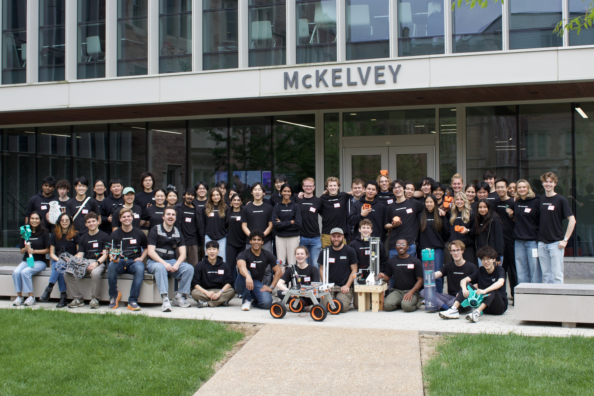
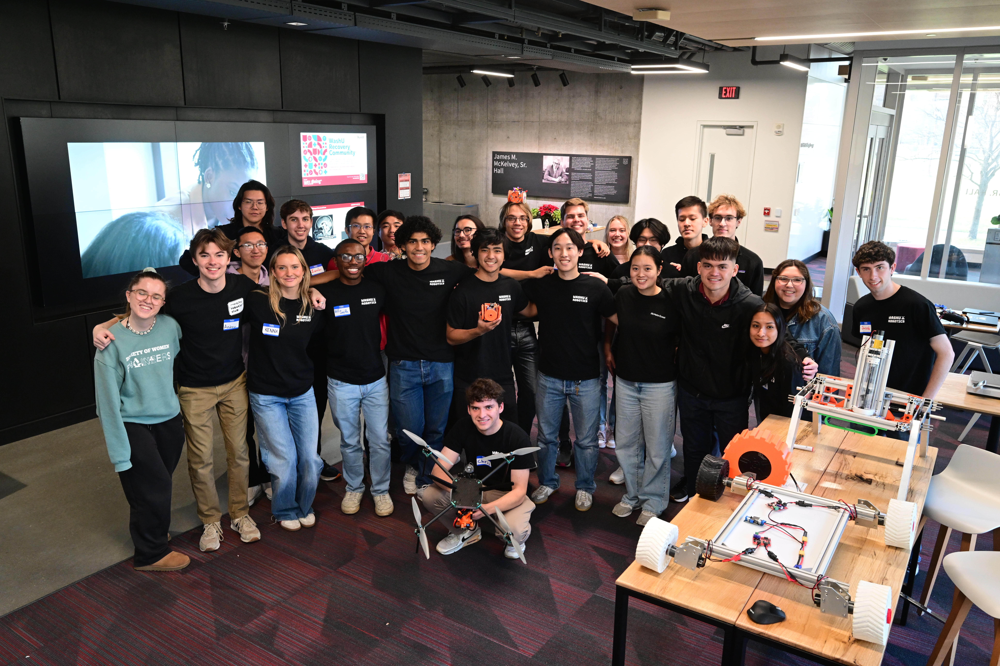
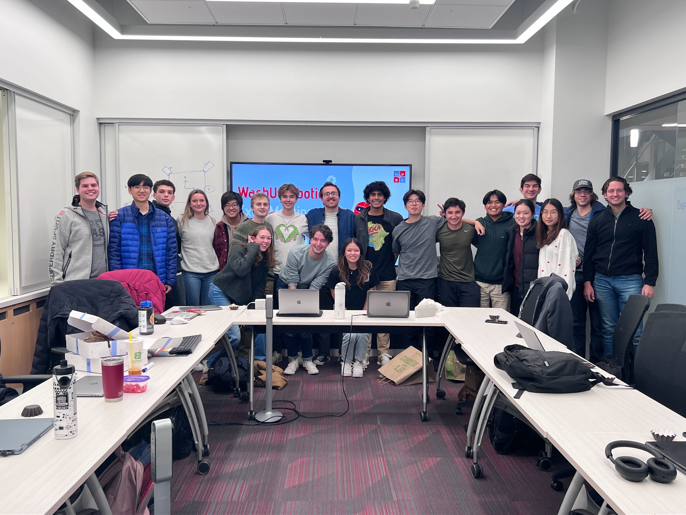

WashU Robotics
At the beginning of my second year of undergrad, I joined an amazing group of students who were eager to try making a variety of robotics ideas into reality. Quickly, I became an executive member of the club, and had a chance to shape its trajectory as it grew from a small student club into the largest project-based student organization in the engineering school. During my time, I became the Vice President of Projects and Operations, and lead the wearables, MATE ROV and Rover teams individually. Click to find out more about each project.


